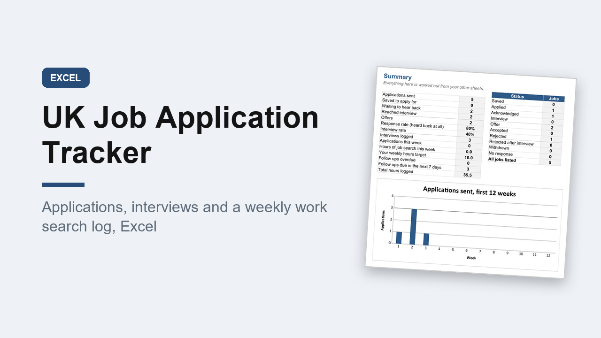

UK Job Application Tracker, Excel, with Work Search Log and Offer Compare
GBP 6.00 · instant digital download

Keep your whole job search in one place: every application, every interview, every follow up, and a log of the time you spend looking.
Made for the UK: pounds, CV not resume, per annum and per hour pay, notice periods, DD/MM/YYYY dates and UK spelling.
What you get: one editable Excel workbook (.xlsx) with 9 sheets.
1.
Start here: plain instructions.
2.
Summary: applications sent, response rate, interview rate, offers, follow ups overdue, this week's hours, a count by status and a chart of applications by week.
3.
Applications: 200 rows with employer, role, where you found it, work pattern, contract type, pay, closing date, CV version, status, next action and days waiting.
Overdue follow ups turn red.
4.
Interviews: 100 rows for stage, format, questions asked, how it went and what to do better.
5.
Work Search Log: 300 rows of activities with hours and evidence, grouped by week.
6.
Weekly Totals: 52 weeks of applications, activities and hours against a target you set.
7.
Contacts and 8.
References: recruiters, agencies and referees.
9.
Offer Compare: up to 4 offers side by side with yearly pay, hourly rate, employer pension, holiday and commute cost.
A worked example is filled in to show how it works.
If you claim Universal Credit, your online journal is still the official record; this is your own copy.
Prints on A4.
Opens in Excel, Google Sheets and Numbers.
Digital download, nothing is posted..
What happens after you buy
Payment and delivery are handled by Gumroad. You get the download straight after paying, and a copy of the link by email. Nothing is posted to you.
Tags: job tracker, job application, job search, work search log, excel template, uk jobs, interview tracker, career planner, cv tracker, job hunting